学习内容来源：古月居ROS入门21讲
核心概念
通信机制： 松耦合分布式软件框架
Node 节点
ROS Master 控制中心/节点管理器
Topic 话题 -- 发布/订阅式的单向异步通信 &&
Message 话题内数据 .msg 话题通信适用于数据传输
Service 服务 -- 请求/应答式的双向同步通信 .srv
服务通信适用于逻辑处理
Parameter 参数 --
全局共享字典服务器，节点使用它来存储和检索运行时的参数，适合存储静态、非二进制的配置参数
文件系统：
ROS命令行工具
常用命令
roscore：启动ROS Master
rosrun <package> <bin>：启动某个功能包的某个节点，package表示功能包名，bin表示该功能包下的.cpp文件编译生成的可执行文件或赋予可执行权限的.py文件，其中C++程序编译生成的可执行文件一般在Project/devel/lib/packageName路径下。
rostopic：话题相关
rostopic list：查看系统中存在的所有话题名rostopic type topicName：查看指定话题的消息类型rostopic echo topicName：输出指定话题在程序运行过程中传输的消息
rosmsg：消息相关
rosservice：服务相关
rosservice list：查询系统中存在的服务`rosservice type serviceName：查看指定服务的srv类型
rossrv：服务内容相关
rossrv list：查看系统中存在的服务内容rossrv type srvName：查看指定服务内容srv的具体数据结构
rosnode：查询节点相关信息
rosenode list：查看所有节点名rosenode info nodename：查看节点nodename的信息，包括其发布、订阅的话题，服务通信的内容以及pid和底层通信信息
实用工具
rosrun rqt_graph rqt_graph：总览整个工程的节点、话题关系
ros_bag：记录所有话题数据
话题记录：rosbag record -a -O cmd_record，-a表示all，
-O设置保存下来的压缩包名字为
"cmd_record"，默认存/home下
话题复现：rosbag play cmd_record.bag
小海龟例子
终端一启动ROS Master：roscore
终端二启动小海龟仿真器：rosrun turtlesim turtlesim_node
终端三启动小海龟键盘控制节点：rosrun turtlesim turtle_teleop_key
利用命令行控制海龟移动：
查看话题名：rostopic list
设置运动速度：rostopic pub /turtle1/cmd_vel geometry_msgs/Twist "：，修改线速度linear和角速度angular
回车即可
坐标轴方向为x朝前，z朝上（小海龟视角），线速度单位是 米/秒，
角速度单位是 弧度/秒
增加一个发送频率使海龟持续移动：pub -r 10
每秒发送10次命令
生成第二只海龟：
查看生成海龟的服务：rosservice list，其中
/spawn 就是生成海龟的服务
发布服务请求：rosservice call /spawn，设置新海龟的坐标x,
y, z以及名字name，回车即可
记录与复现
记录所有信息：rosbad record -a -O cmd_record，在/home下就会出现一个名为cmd_record.bag的文件
复现：先关闭之前的进程，重新启动ROS Master和仿真器，再运行
rosbag play cmd_record.bag 即可
基本指令
创建工作空间与功能包
关键指令含义：
catkin_init_workspace：初始化工作空间，在src中生成
CMakeLists.txt 文件catkin_make install：编译src路径下所有功能包的源码，生成三个文件夹：devel，build，installcatkin_create_pkg：创建功能包test_pkg，依赖于std_msgs、rospy、roscpp，功能包必须在src中创建
1 2 3 4 5 6 7 mkdir -p catkin_ws/srccd catkin_ws/srccatkin_init_workspace cd ..catkin_make install cd src/catkin_create_pkg test_pkg std_msgs rospy roscpp
生成的各个文件夹的含义：
catkin_ws：工作空间根目录
build：编译空间，存放编译过程中生成的中间文件
devel：开发空间，存放开发过程中生成的可执行文件、头文件和库
install：安装空间，存放开发完成后最终编译生成的可执行文件
src：存放所有功能包的源码
test_pkg：功能包，在该路径下生成子文件夹src与include，以及配置文件CMakeLists.txt和package.xml
CMakeLists.txt：设置编译规则package.xml：提供关于功能包的信息，如名称、版本、描述、作者邮箱、开源协议以及依赖信息等
创建完功能包后回到工作空间根目录重新catkin_make：
将功能包路径添加到系统环境变量中：
查看是否成功添加环境变量：
Publisher 发布者编程实现
小海龟示例的通讯例子：
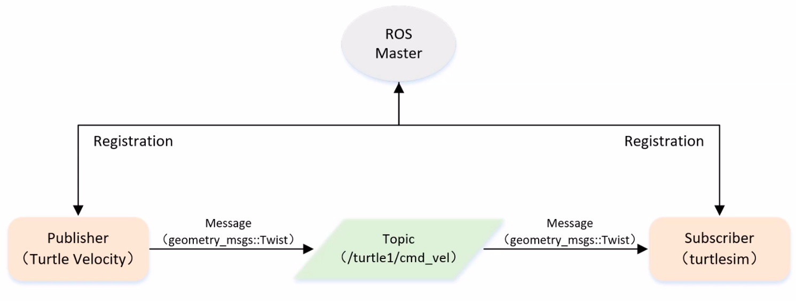
建立新的工作空间，创建包：
1 2 3 4 5 mkdir -p catkin_ws/srccd catkin_ws/srccatkin_init_workspace catkin_create_pkg learning_topic roscpp rospy std_msgs geometry_msgs turtlesim vim learning_topic/velocity_publisher.cpp
Publisher 实现过程（沿用上面的工作空间）：
初始化ROS节点
向ROS Master注册节点信息，包括发布的话题名以及话题中的消息类型
创建消息数据
按照一定的频率循环发布消息
cpp版本：
velocity_publisher.cpp
1 2 3 4 5 6 7 8 9 10 11 12 13 14 15 16 17 18 19 20 21 22 23 24 25 26 27 28 29 30 31 32 33 34 35 36 #include <ros/ros.h> #include <geometry_msgs/Twist.h> int main (int argc, char ** argv) ros::init (argc, argv, "velocity_publisher" ); ros::NodeHandle n; ros::Publisher turtle_vel_pub = n.advertise <geometry_msgs::Twist>("turtle1/cmd_vel" , 10 ); ros::Rate loop_rate (10 ) ; while (ros::ok ()) { geometry_msgs::Twist vel_msg; vel_msg.linear.x = 0.5 ; vel_msg.angular.z = 0.2 ; turtle_vel_pub.publish (vel_msg); ROS_INFO ("Publish turtle velocity command[%0.2f m/s, %0.2f rad/s]" , vel_msg.linear.x, vel_msg.angular.z); loop_rate.sleep (); } return 0 ; }
本例程中部分内容的解释
队列： “队列”的意思就是buffer缓冲区。由于ROS发布和接收并不是同步的，如果发布的速度非常快，例如10ms就能发送一条信息，但接受方并不能做到10ms接受一条信息，为了解决这个问题，要在发送方和接受方之间加一个缓冲区，发送方将数据按照发送顺序写入缓冲区，接受方就从缓冲区里读。队列的长度就是缓冲区的容量，在发送与接受的速度相差不大且队列长度足够时，接受方慢慢读一定是能读完每一条信息的，但如果发送速度远大于接受速度，当队列溢出时，最早写入缓冲区的数据就会被弹出，整个过程类似于双端队列queue。
ros::Rate
loop_rate(10)： 用于控制发布速率，数值10表示将发布速度限制在10hz，这里只是设置了发布的速度，需要配合loop_rate.sleep()进行休眠，才能达到休眠/限速的目的。
ros::ok()： roscpp默认生成一个SIGNT句柄，它负责处理Ctrl+C键盘操作---使ros::ok()返回false，意味着当前的节点失效。ros::ok()返回false的情况有以下四种：
SIGNT被触发，即键盘按下Ctrl+C
被另一个同名节点踢出ROS网络
ros::shutdown()被程序的另一部分调用
节点中的所有ros::NodeHandles都已经被销毁
turtle1/cmd_vel： ROS自带的小海龟例程中的一个话题名，在用rosrun turtlesim turtlesim_node启动小海龟节点后，可用rostopic list查找到该话题，如图1所示。在明确知道话题名时，可用rostopic type /turtle1/cmd_vel查看该话题的消息类型，如图1所示，消息类型为geometry_msgs/Twist，在程序中标注消息类型时需要引入同名头文件#include <geometry_msgs/Twist.h>，使用该消息类型时，要用命名空间的形式，如geometry_msgs::Twist。
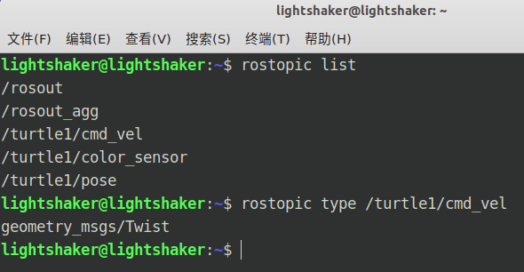
另外，也可以用rosmsg list查找到该消息名称，如图2所示。要知道如何在程序中设置消息内容，可以使用rosmsg show geometry/Twist查看该消息在程序中可用的数据类型，如图3所示，该消息包含了线速度linear和角速度angular两个结构体，其中又分别包含了x,y,z三个分量，在程序中可以访问类public成员的方式设置和使用这些数据，例如vel_msg.linear.x或vel_msg.angular.z。
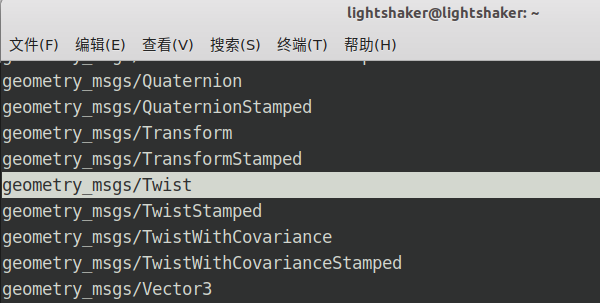
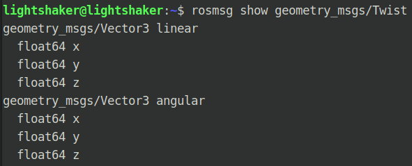
CMakeLists.txt
1 2 3 add_executable (velocity_publisher src/velocity_publisher.cpp)target_link_libraries (velocity_publisher ${catkin_LIBRARIES} )
编译运行
1 2 3 4 5 6 7 8 9 cd ~/catkin_wscatkin_make rescore rosrun turtlesim turtlesim_node source devel/setup.bashrosrun learning_ropic velocity_publisher
需要注意的是，source
执行的命令只对当前的终端有效，而终端三才用到我们自己写的velocity_publisher，因此需要在启动终端三时再执行一次
source，否则 rosrun 无法找到
learning_topic 功能包。
python版本：
为了将cpp和py文件区分开，在learning_topic路径下新建一个文件夹scripts用于存放py源码
1 2 3 cd ~/catkin_ws/src/learning_topicmkdir scripts && cd scriptsvim velocity_publisher.py
velocity_publisher.py
1 2 3 4 5 6 7 8 9 10 11 12 13 14 15 16 17 18 19 20 21 22 23 24 25 26 27 28 29 30 31 32 33 34 35 36 import rospyfrom geometry_msgs.msg import Twistdef velocity_publisher (): rospy.init_node("velocity_publisher" , anonymous=True ) turtle_vel_pub = rospy.Publisher('/turtle1/cmd_vel' , Twist, queue_size=10 ) rate = rospy.Rate(10 ) while not rospy.is_shutdown(): vel_msg = Twist() vel_msg.linear.x = 0.5 vel_msg.angular.z = 0.2 turtle_vel_pub.publish(vel_msg) rospy.loginfo("Publish turtle velocity command[%0.2f ms, %0.2f rad/s]" , vel_msg.linear.x, vel_msg.angular.z) rate.sleep(); if __name__ == '__main__' : try : velocity_publisher(); except rospy.ROSInterruptException: pass
由于python是解释性语言，因此需要给py文件加上可执行权限：
1 chmod +x velocity_publisher.py
运行时仅终端三的命令与cpp不同：
1 2 source ~/catkin/devel/setup.bashrosrun learning_topic velocity_publisher.py
Subscriber 订阅者编程实现
小海龟通讯机制
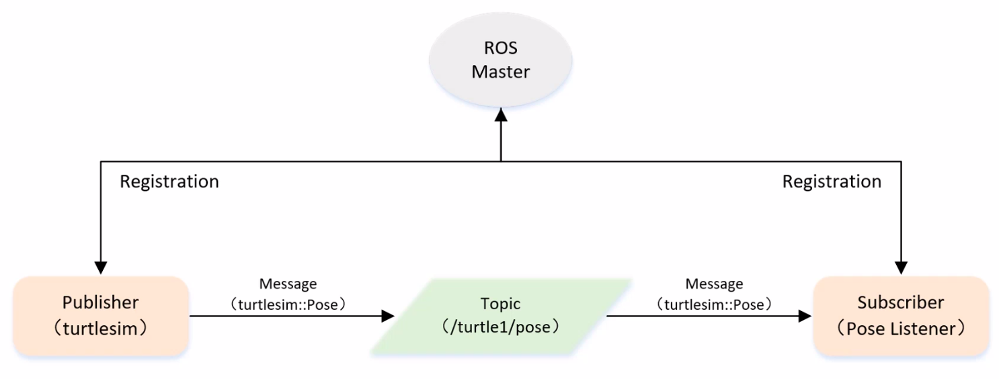
此处沿用 Publisher 的工作空间，不做改动，只添加 Subscriber：
1 2 cd ~/catkin_ws/src/learning_topic/srcvim pose_subscriber.cpp
Subscriber的实现过程：
cpp版本：
pose_subscriber.cpp
1 2 3 4 5 6 7 8 9 10 11 12 13 14 15 16 17 18 19 20 21 22 23 24 25 26 #include <ros/ros.h> #include "turtlesim/Pose.h" void poseCallback (const turtlesim::Pose::ConstPtr& msg) ROS_INFO ("Turtle pose: x:%0.6f, y:%0.6f" , msg->x, msg->y); } int main (int argc, char ** argv) ros::init (argc, argv, "pose_subscriber" ); ros::NodeHandle n; ros::Subscriber pose_sub = n.subscribe ("/turtle1/pose" , 10 , poseCallback); ros::spin (); return 0 ; }
例程中部分内容的解释
poseCallback： n.subscribe()订阅名为
/turtle1/pose
的话题，接收器每一次接受到消息时都会调用)名为poseCallback
的函数，称为回调函数，在回调函数中处理接受到的信息。回调函数的参数
const turtlesim::Pose::ConstPtr& msg
是指向具体消息类型的指针，指针形式 constPtr&
是固定的，区别只在于前面的消息类型 turtlesim::Pose
。使用该指针的方式为
msg->data，data为指定消息的具体数据结构，在本例中
turtlesim::Pose 的数据结构中包含了
float32 x，因此可以用 msg->x
直接读取该数据。另外需要注意的是，ROS中的回调函数返回值只能为空。
ros::spinOnce()： 运行至该语句时，程序同样会到相应的topic订阅缓冲区查看是否存在消息，如果存在就将消息传入回调函数，如果不存在就继续执行程序接下来的语句。
ros::spin()： 运行至该语句时，程序同样会到相应的topic订阅缓冲区查看是否存在消息，如果存在就将消息传入回调函数，但是如果消息不存在就会一直重复上面的查询操作。总的来说，spin
相当于处于 while(1) 死循环内的
spinOnce()，spinOnce
只查询一次，有消息就传参给回调函数，没有就继续执行程序，而
spin 会一直循环查询和传参，终止 spin
的方式与终止 ros::ok() 相同。
CMakeLists.txt
1 2 3 add_executable (pose_subscriber src/pose_subscriber.cpp)target_link_libraries (velocity_publisher ${catkin_LIBRARIES} )
编译运行
1 2 3 4 5 6 7 8 9 cd ~/catkin_wscatkin_make rescore rosrun turtlesim turtlesim_node source devel/setup.bashrosrun learning_ropic velocity_publisher
通过键盘控制或利用刚刚写的Publisher让海龟动起来就能看到终端三中的数据变化
1 2 3 4 5 source devel/setup.bashrosrun turtlesim turtle_teleop_key rosrun learning_topic velocity_publisher
python版本：
同理在sciprts文件夹中添加
pose_subscriber.py 文件
1 2 cd ~/catkin_ws/src/learning_topic/scriptsvim pose_subscriber.py
pose_subscriber.py
1 2 3 4 5 6 7 8 9 10 11 12 13 14 15 16 17 import rospyfrom turtlesim.msg import Posedef poseCallback (msg ): rospy.loginfo("Turtle pose: x:%0.6f, y:%0.6f" , msg.x, msg.y) def pose_subscriber (): rospy.init_node("pose_subscriber" , anonymous=True ) rospy.Subscriber("/turtle1/pose" , Pose, poseCallback) rospy.spin() if __name__ == '__main__' : pose_subscriber()
加上可执行权限
1 chmod +x pose_subscriber.py
运行 pose_subscriber.py：
1 2 source devel/setup.bashrosrun learning_topic pose_subscriber.py
话题消息自定义与使用
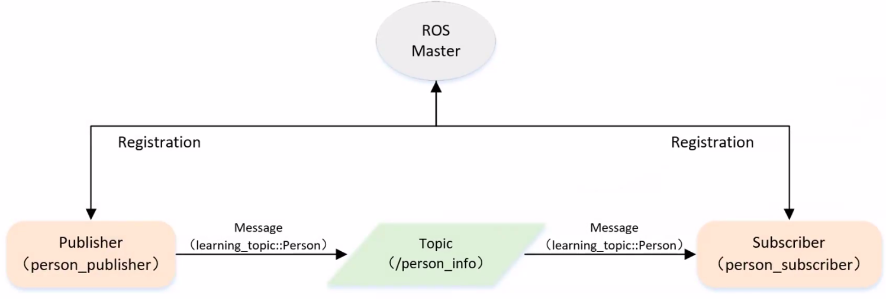
自定义话题消息数据类型的方式：
创建msg文件
在package.xml文件中添加功能包依赖
1 2 <build_depend > message_generation</build_depend > <exec_depend > message_runtime</exec_depend >
1 2 3 4 find_package (... message_generation)add_message_files(FILES Person.msg) generation_messages(DEPENDENCIES std_msgs) catkin_package(... message_runtime)
cpp版本
沿用learning_topic功能包，在功能包路径下创建msg文件夹，在文件夹中创建Person.msg数据文件，内容如下：
1 2 3 4 5 6 7 string name uint8 sex uint8 age uint8 unknown = 0 uint8 male = 1 uint8 female = 2
设置package.xml和CMakeLists.txt
1 2 3 4 ... <build_depend > message_generation</build_depend > <exec_depend > message_runtime</exec_depend > ...
1 2 3 4 5 6 7 8 9 10 11 12 13 14 15 16 17 18 19 20 21 22 23 24 25 26 27 28 29 cmake_minimum_required (VERSION 2.8 .3 )project (learning_topic)find_package (catkin REQUIRED COMPONENTS geometry_msgs roscpp rospy std_msgs turtlesim message_generation ) add_message_files( FILES Person.msg ) generate_messages( DEPENDENCIES std_msgs ) catkin_package( CATKIN_DEPENDS geometry_msgs roscpp rospy std_msgs turtlesim message_runtime ) include_directories ( ${catkin_INCLUDE_DIRS} )
执行catkin_make编译工程后，在devel/include/learning_topic/工程路径内会生成一个Person.h头文件，对应刚刚创建的Person.msg
在learning_topic/src路径下创建person_publisher.cpp和person_subscriber.cpp源文件
person_publisher.cpp
1 2 3 4 5 6 7 8 9 10 11 12 13 14 15 16 17 18 19 20 21 22 23 24 25 26 27 28 29 30 31 32 33 34 35 36 37 38 39 40 41 42 43 44 45 #include <ros/ros.h> ... <build_depend>message_generation</build_depend> <exec_depend>message_runtime</exec_depend> ... #include "learning_topic/Person.h" int main (int argc, char **argv) ros::init (argc, argv, "person_publisher" ); ros::NodeHandle n; ros::Publisher person_info_pub = n.advertise <learning_topic::Person>("/person_info" , 10 ); ros::Rate loop_rate (1 ) ; int count = 0 ; while (ros::ok ()) { learning_topic::Person person_msg; person_msg.name = "Tom" ; person_msg.age = 18 ; person_msg.sex = learning_topic::Person::male; person_info_pub.publish (person_msg); ROS_INFO ("Publish Person Info: name:%s age:%d sex:%d" , person_msg.name.c_str (), person_msg.age, person_msg.sex); loop_rate.sleep (); } return 0 ; }
person_subscriber.cpp
1 2 3 4 5 6 7 8 9 10 11 12 13 14 15 16 17 18 19 20 21 22 23 24 25 26 27 28 29 30 31 #include <ros/ros.h> #include "learning_topic/Person.h" void personInfoCallback (const learning_topic::Person::ConstPtr& msg) ROS_INFO ("Subcribe Person Info: name:%s age:%d sex:%d" , msg->name.c_str (), msg->age, msg->sex); } int main (int argc, char **argv) ros::init (argc, argv, "person_subscriber" ); ros::NodeHandle n; ros::Subscriber person_info_sub = n.subscribe ("/person_info" , 10 , personInfoCallback); ros::spin (); return 0 ; }
CMakeLists.txt
1 2 3 4 5 6 7 add_executable (person_publisher src/person_publisher.cpp)target_link_libraries (person_publisher ${catkin_LIBRARIES} )add_dependencies (person_publisher ${PROJECT_NAME} _generate_messages_cpp)add_executable (person_subscriber src/person_subscriber.cpp)target_link_libraries (person_subscriber ${catkin_LIBRARIES} )add_dependencies (person_subscriber ${PROJECT_NAME} _generate_messages_cpp)
编译运行
1 2 3 4 5 6 7 8 9 10 cd ~/catkin_wscatkin_make roscore source devel/setup.bashrosrun learning_topic person_publisher source devel/setup.bashrosrun learning_topic person_subscriber
运行结果如图所示
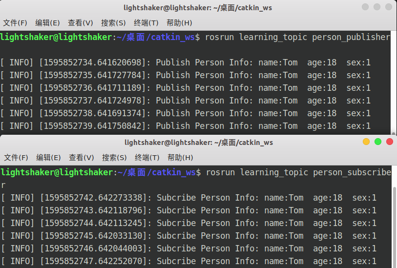
python版本
在/learning_topic/scripts路径下创建person_publisher.py和person_subscriber.py文件
person_publisher.py
1 2 3 4 5 6 7 8 9 10 11 12 13 14 15 16 17 18 19 20 21 22 23 24 25 26 27 28 29 30 31 32 33 34 35 36 37 38 import rospyfrom learning_topic.msg import Persondef velocity_publisher (): rospy.init_node('person_publisher' , anonymous=True ) person_info_pub = rospy.Publisher('/person_info' , Person, queue_size=10 ) rate = rospy.Rate(10 ) while not rospy.is_shutdown(): person_msg = Person() person_msg.name = "Tom" ; person_msg.age = 18 ; person_msg.sex = Person.male; person_info_pub.publish(person_msg) rospy.loginfo("Publsh person message[%s, %d, %d]" , person_msg.name, person_msg.age, person_msg.sex) rate.sleep() if __name__ == '__main__' : try : velocity_publisher() except rospy.ROSInterruptException: pass
person_subscriber.py
1 2 3 4 5 6 7 8 9 10 11 12 13 14 15 16 17 18 19 20 21 22 23 24 import rospyfrom learning_topic.msg import Persondef personInfoCallback (msg ): rospy.loginfo("Subcribe Person Info: name:%s age:%d sex:%d" , msg.name, msg.age, msg.sex) def person_subscriber (): rospy.init_node('person_subscriber' , anonymous=True ) rospy.Subscriber("/person_info" , Person, personInfoCallback) rospy.spin() if __name__ == '__main__' : person_subscriber()
设置可执行权限，运行
1 2 3 4 chmod +x person_publisher.py person_subscriber.pyroscore rosrun learning_topic person_publisher.py rosrun learning_topic person_subscriber.py
Client 服务器客户端编程实现
Client客户端发布/spawn服务请求，服务端turtlesim接收到后回复，生成新的小海龟
服务的数据类型为：turtlesim::Spawn
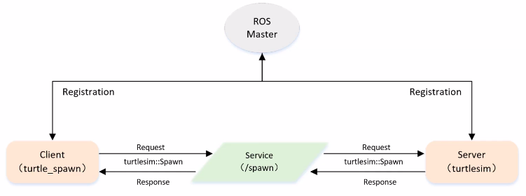
创建功能包
1 2 cd catkin_ws/srccatkin_create_pkg learning_service roscpp rospy std_msgs geometry_msgs turtlesim
Client的实现过程：
初始化ROS节点
创建一个Client实例
发布服务请求数据
等待Server处理之后的应答结果
cpp版本：
turtle_spawn.cpp
1 2 3 4 5 6 7 8 9 10 11 12 13 14 15 16 17 18 19 20 21 22 23 24 25 26 27 28 29 30 31 32 33 #include <ros/ros.h> #include <turtlesim/Spawn.h> int main (int argc, char ** argv) ros::init (argc, argv, "turtle_spawn" ); ros::NodeHandle node; ros::service::waitForService ("/spawn" ); ros::ServiceClient add_turtle = node.serviceClient <turtlesim::Spawn>("/spawn" ); turtlesim::Spawn srv; srv.request.x = 2.0 ; srv.request.y = 2.0 ; srv.request.name = "turtle2" ; ROS_INFO ("Call service to spawn turtle[x:%0.6f, y:%0.6f, name:%s]" , srv.request.x, srv.request.y, srv.request.name.c_str ()); add_turtle.call (srv); ROS_INFO ("Spawn turtle successfully [name:%s]" , srv.response.name.c_str ()); return 0 ; }
CMakeLists.txt
1 2 add_executable (turtle_spawn src/turtle_spawn.cpp)target_link_libraries (turtle_spawn ${catkin_LIBRARIES} )
编译运行
1 2 3 4 5 6 7 8 9 cd ~/catkin_wscatkin_make rescore rosrun turtlesim turtlesim_node source devel/setup.bashrosrun learning_service turtle_spawn
python版本：
1 2 3 mkdir ~/catkin_ws/src/learning_service/scriptscd ~/catkin_ws/src/learning_service/scriptstouch turtle_spawn.py
turtle_spawn.py
1 2 3 4 5 6 7 8 9 10 11 12 13 14 15 16 17 18 19 20 21 22 23 24 25 26 27 import sysimport rospyfrom turtlesim.srv import Spawndef turtle_spawn (): rospy.init_node('turtle_spawn' ) rospy.wait_for_service('/spawn' ) try : add_turtle = rospy.ServiceProxy('/spawn' , Spawn) response = add_turtle(2.0 , 2.0 , 0.0 , "turtle2" ) return response.name except rospy.ServiceException, e: print ("Service call failed: %s" %e) if __name__ == "__main__" : print ("Spawn turtle successfully [name:%s]" %(turtle_spawn()))
加上可执行权限
1 chmod +x turtle_spawn.py
运行 pose_subscriber.py：
1 2 source devel/setup.bashrosrun learning_service turtle_spawn.py
Server 服务器服务端编程实现
服务端通过查询回调函数队列，接收客户端发出的服务请求，回调函数参数std_srvs::Trigger作为类触发器，包含了Trigger::Request和Trigger::Response两种数据类型，查询到服务请求时就触发，进入回调函数，做出回应。
服务的数据类型为std_srvs::Trigger
Server的实现流程
初始化ROS节点
创建服务端Server实例
循环等待服务请求，进入回调函数
在回调函数中完成服务功能的处理，并反馈应答数据
cpp版本
沿用客户端的功能包，在src路径下创建新文件turtle_command_server.cpp
1 2 3 4 5 6 7 8 9 10 11 12 13 14 15 16 17 18 19 20 21 22 23 24 25 26 27 28 29 30 31 32 33 34 35 36 37 38 39 40 41 42 43 44 45 46 47 48 49 50 51 52 53 54 55 56 57 58 59 60 61 62 63 64 #include <ros/ros.h> #include <geometry_msgs/Twist.h> #include <std_srvs/Trigger.h> ros::Publisher turtle_vel_pub; bool pubCommand = false ;bool commandCallback (std_srvs::Trigger::Request &req, std_srvs::Trigger::Response &res) pubCommand = !pubCommand; ROS_INFO ("Publish turtle velocity command [%s]" , pubCommand==true ?"Yes" :"No" ); res.success = true ; res.message = "Change turtle command state!" ; return true ; } int main (int argc, char ** argv) ros::init (argc, argv, "turtle_command_server" ); ros::NodeHandle n; ros::ServiceServer comand_server = n.advertiseService ("/turtle_command" , commandCallback); turtle_vel_pub = n.advertise <geometry_msgs::Twist>("/turtle1/cmd_vel" , 10 ); ROS_INFO ("Ready to receive turtle command." ); ros::Rate loop_rate (10 ) ; while (ros::ok ()) { ros::spinOnce (); if (pubCommand) { geometry_msgs::Twist vel_msgs; vel_msgs.linear.x = 0.5 ; vel_msgs.angular.z = 0.2 ; turtle_vel_pub.publish (vel_msgs); } loop_rate.sleep (); } return 0 ; }
本例程中部分内容的解释
利用rossrv show std_srvs/Trigger查看服务的具体数据类型，如图所示，三短横---分割了Request和Response的内容，由于Request的数据需要由客户端决定，因此这里只能看到Response的默认数据结构为bool success和string message，分别表示服务请求是否收到，以及发送回客户端的提示信息。
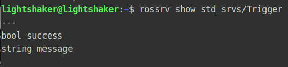
CMakeLists.txt
1 2 add_executable (turtle_command_server src/turtle_command_server.cpp)target_link_libraries (turtle_command_server ${catkin_LIBRARIES} )
编译运行
1 2 3 4 5 6 7 8 9 10 11 cd ~/catkin_ws catkin_make rescore rosrun turtlesim turtlesim_node source devel/setup.bash rosrun learning_ropic turtle_command_server rosservice call /turtle_command "{}"
运行效果如图所示，在执行turtle_command_server后，使用rosservice list就可以查找到我们在cpp程序中创建的名为/turtle_command的服务。
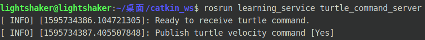
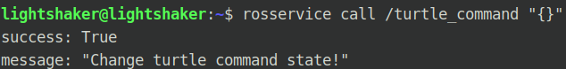
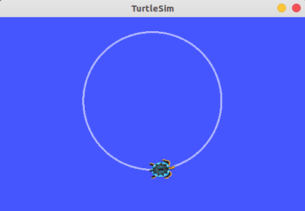
python版本
turtle_command_server.py
1 2 3 4 5 6 7 8 9 10 11 12 13 14 15 16 17 18 19 20 21 22 23 24 25 26 27 28 29 30 31 32 33 34 35 36 37 38 39 40 41 42 43 44 45 46 47 48 49 import rospyimport threadimport timefrom geometry_msgs.msg import Twistfrom std_srvs.srv import Trigger, TriggerResponsepubCommand = False ; turtle_vel_pub = rospy.Publisher('/turtle1/cmd_vel' , Twist, queue_size=10 ) def command_thread (): while True : if pubCommand: vel_msg = Twist() vel_msg.linear.x = 0.5 vel_msg.angular.z = 0.2 turtle_vel_pub.publish(vel_msg) time.sleep(0.1 ) def commandCallback (req ): global pubCommand pubCommand = bool (1 - pubCommand) rospy.loginfo("Publish turtle velocity command![%d]" , pubCommand) return TriggerResponse(1 , "Change turtle command state!" ) def turtle_command_server (): rospy.init_node('turtle_command_server' ) s = rospy.Service('/turtle_command' , Trigger, commandCallback) print ("Ready to receive turtle command" ) thread.start_new_thread(command_thread, ()) rospy.spin() if __name__ == "__main__" : turtle_command_server()
添加可执行权限，运行
1 2 3 chmod +x turtle_command_server.pyrosrun learning_service turtle_command_server.py rosservice call /turtle_command "{}"
服务数据自定义与使用
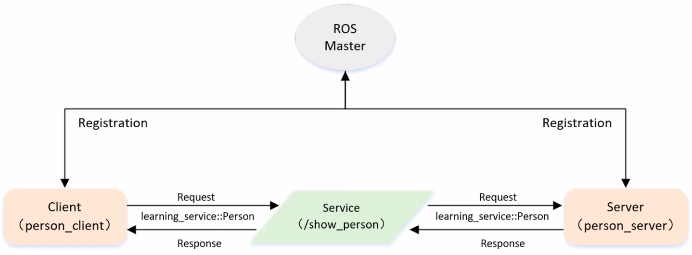
自定义服务数据类型的方式：
cpp版本
沿用learning_service功能包，在该功能包路径下创建名为srv的文件夹，在文件夹内创建Person.srv数据文件，文件内容如下：
1 2 3 4 5 6 7 8 9 string name uint8 age uint8 sex uint8 unknown = 0 uint8 male = 1 uint8 female = 2 --- string result
设置package.xml和CMakeLists.txt
1 2 3 4 ... <build_depend > message_generation</build_depend > <exec_depend > message_runtime</exec_depend > ...
1 2 3 4 5 6 7 8 9 10 11 12 13 14 15 16 17 18 19 20 21 22 23 24 25 26 27 28 cmake_minimum_required (VERSION 2.8 .3 )project (learning_service)find_package (catkin REQUIRED COMPONENTS geometry_msgs roscpp rospy std_msgs turtlesim message_generation ) add_service_files(FILES Person.srv) generate_messages(DEPENDENCIES std_msgs) catkin_package( CATKIN_DEPENDS geometry_msgs roscpp rospy std_msgs turtlesim message_runtime ) include_directories ( ${catkin_INCLUDE_DIRS} ) add_executable (turtle_spawn src/turtle_spawn.cpp)target_link_libraries (turtle_spawn ${catkin_LIBRARIES} )add_executable (turtle_command_server src/turtle_command_server.cpp)target_link_libraries (turtle_command_server ${catkin_LIBRARIES} )
执行catkin_make编译整个工程，在devel/include/learning_service路径下会生成三个.h头文件，分别为Person.h、PersonRequest.h和PersonResponse.h，如图所示，
因为Person.h内包含了另外两个头文件，因此使用时只包含Person.h就行。
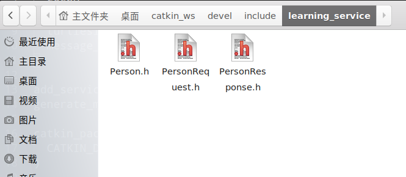
在learning_service/src路径下创建person_client.cpp和person_server.cpp
person_client.cpp
1 2 3 4 5 6 7 8 9 10 11 12 13 14 15 16 17 18 19 20 21 22 23 24 25 26 27 28 29 30 31 32 33 34 35 36 #include <ros/ros.h> #include "learning_service/Person.h" int main (int argc, char ** argv) ros::init (argc, argv, "person_client" ); ros:NodeHandle node; ros::service::waitForService ("/show_person" ); ros::ServiceClient person_client = node.serviceClient <learning_service::Person>("/show_person" ); learning_service::Person srv; srv.request.name = "Tom" ; srv.request.age = 20 ; srv.request.sex = learning_service::Person::Request::male; ROS_INFO ("Call service to show person[name:%s, age:%d, sex:%d]" , srv.request.name.c_str (), srv.request.age, srv.request.sex); person_client.call (srv); ROS_INFO ("Show person result: %s" , srv.response.result.c_str ()); return 0 ; }
person_server.cpp
1 2 3 4 5 6 7 8 9 10 11 12 13 14 15 16 17 18 19 20 21 22 23 24 25 26 27 28 29 30 31 32 33 34 35 36 37 #include <ros/ros.h> #include "learning_service/Person.h" bool personCallback (learning_service::Person::Request &req, learning_service::Person::Response &res) ROS_INFO ("Person: name:%s age:%d sex:%d" , req.name.c_str (), req.age, req.sex); res.result = "OK" ; return true ; } int main (int argc, char ** argv) ros::init (argc, argv, "person_server" ); ros::NodeHandle n; ros::ServiceServer person_service = n.advertiseService ("/show_person" , personCallback); ROS_INFO ("Ready to show person information." ); ros:spin (); return 0 ; }
CMakeLists.txt
1 2 3 4 5 6 7 add_executable (person_server src/person_server.cpp)target_link_libraries (person_server ${catkin_LIBRARIES} )add_dependencies (person_server ${PROJECT_NAME} _gencpp)add_executable (person_client src/person_client.cpp)target_link_libraries (person_client ${catkin_LIBRARIES} )add_dependencies (person_client ${PROJECT_NAME} _gencpp)
编译运行
1 2 3 4 5 6 7 8 9 10 cd ~/catkin_wscatkin_make roscore source devel/setup.bashrosrun learning_service person_server source devel/setup.bashrosrun learning_service person_client
运行效果如图所示
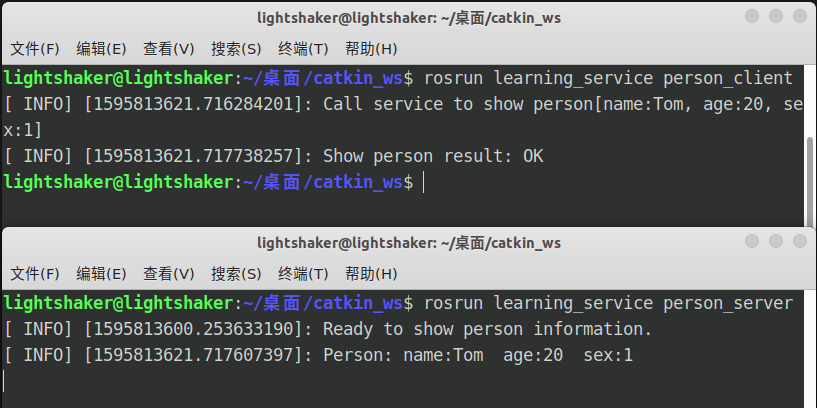
通常情况下是先运行服务端person_server再运行客户端person_client，在本例中如果先运行客户端的话，由于waitForService的存在，程序也不会中断，会一直等到服务端启动，/show_person服务被创建之后执行call命令、
python版本
在/learning_service/script路径下创建person_client.py和person_server.py
person_client.py
1 2 3 4 5 6 7 8 9 10 11 12 13 14 15 16 17 18 19 20 21 22 23 24 25 26 import sysimport rospyfrom learning_service.srv import Person, PersonRequestdef person_client (): rospy.init_node('person_client' ) rospy.wait_for_service('/show_person' ) try : person_client = rospy.ServiceProxy('/show_person' , Person) response = person_client("Tom" , 20 , PersonRequest.male) return response.result except rospy.ServiceException as e: print ("Service cal failed:%s" , e) if __name__ == "__main__" : print ("Show person result: %s" %(person_client()))
person_server.py
1 2 3 4 5 6 7 8 9 10 11 12 13 14 15 16 17 18 19 20 21 22 23 24 25 26 27 import rospyfrom learning_service.srv import Person, PersonResponsedef personCallback (req ): rospy.loginfo("Person: name:%s age:%d sex:%d" , req.name, req.age, req.sex) return PersonResponse("OK" ) def person_server (): rospy.init_node('person_server' ) s = rospy.Service('/show_person' , Person, personCallback) print ("Ready to show person information." ) rospy.spin() if __name__ == "__main__" : person_server()
设置可执行权限，运行
1 2 3 4 chmod +x person_client.py person_server.pyroscore rosrun learning_service person_client.py rosrun learning_service person_server.py